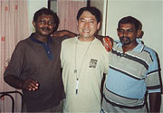
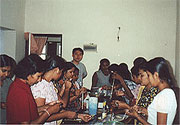
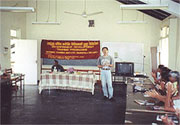

「いろいろとご対応ありがとうございました。お陰さまでとても有意義な旅ができたと思っております。この旅において、いろいろな人と出会い、文化の違いを体験し、自分なりに考えることも多かったと思います。
このプログラムは値段的にリーズナブルだったことと、観光旅行は好きではないので、ホームステイやボランティア活動的な旅行をしたいと思って参加をしました。
ホストファミリーの方々、サーンタさんはじめ皆さまには、大変お世話になりました。今までインドやネパール等でホームステイをしましたが、スリランカでの食事は、思ったより辛(から)かったです。
ワヤンバ職業訓練校（WTI）でのボランティアやヒッカドゥアに行ったこともあり、ホームステイ先での滞在日は少なかったのですが、楽しかったです。
買い物に同行したり、バスの乗り方を教えてもらったり、洗濯をしてもらったりして助かりました。スリランカは、思っていた以上に暑く、湿度がありました。
気に入った点は、物価が安く、フルーツがおいしかったこと、気に入らなかった点は、時間にルーズなところです。列車などは朝早く起きて行ったのに１時間遅れで駅にきました。
それでも乗車客からは特に不平もないようです。スリランカは、日本と違い時間厳守という文化ではないのでしょう。急なスコールもしばしばあり、時間通りというのが難しいのだと思いました。
現地の人を日本の慣習にあわせさせるのではなく、こういう文化だということで、日本人がそれにあわせるのがホームステイかと思います。また、是非スリランカに行きたいと思います。
ワヤンバ職業訓練校（WTI）でのボランティアにもまた参加したいと思います。」

